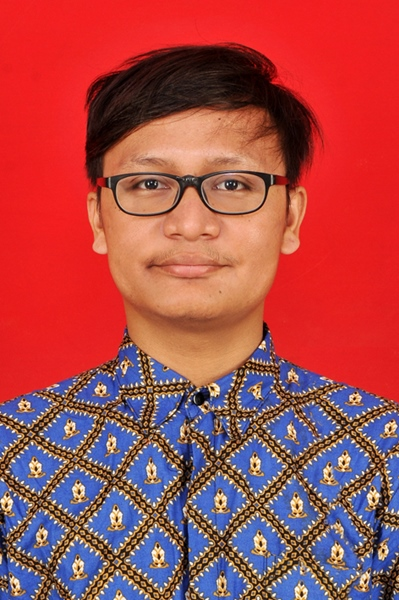
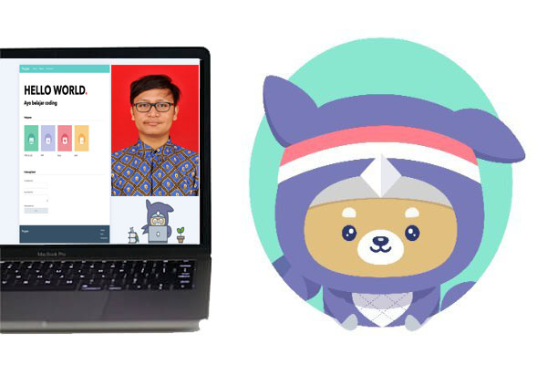

Biodata

Yosia Ktistian
Newbe Programmer Web Aplication
Menurut saya, Saya mendapatkan pengalaman baru, pemahaman baru, dan tentunya banyak kenalan baru di sini. Mari Belajar
GitHubPortofolio

Website
Pada sesi pertama, para peserta DTS 2020 mengerjakan proyek tim berupa pembuatan halaman website dari HTML dan CSS yang telah dipelajari sebelumnya melalui modul pembelajaran di Progate.
Akses Halaman Lihat di GitHubKalkulator
Pertemuan Online akan berakhir, para peserta DTS 2020 mengerjakan proyek lanjutan berupa pembuatan aplikasi kalkulator sederhana dari JavaScript yang telah dipelajari sebelumnya melalui modul pembelajaran di Progate.
Akses Halaman Lihat di GitHubProgram hebat ini diselenggarakan oleh :